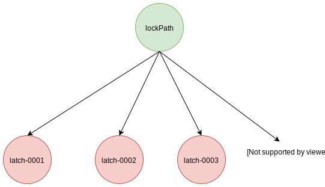

前言
zookeeper 的原生客户端使用起来比较繁琐，一般生成环境很少使用。curator 在外面封装了一层，使用起来更加方便，并且还提供了常用的场景，比如 leader 选举，分布式锁，分布式队列。本篇博客会首先介绍 curator 的基本使用，然后介绍它提供的使用场景的实现。
基本使用
builder 模式
curator 使用 builder 模式来构建请求，对于每种请求类型，都有着不同的 builder。比如 get 请求需要 GetDataBuilder 来构建，create 请求需要 CreateBuilder 来构建。下面展示了简单的使用示例：
|
|
异步回调封装
原生的 zookeeper 客户端，同样支持异步请求，但是对于每种请求，都有着不同类型的回调函数，比如。而 curator 则统一了这些回调函数，使用起来更加方便。用户只需要实现 BackgroundCallback 接口就行，参数 CuratorEvent 统一封装了不同类型的响应。
|
|
当使用异步请求时，请求都会被添加到 CuratorFrameworkImpl 的一个队列里，它有一个后台线程，负责发送这些请求。它的本质任然时调用了原生 zookeeper 客户端的异步通信，这些函数回调的执行是由原生 zookeeper 客户端的后台线程里。
重试策略
当通信遇到错误时，curator 会自动发起重试。它会判断错误是否可以重试，如果允许重试，就会根据重试策略计算出间隔时间，等待过后就重新发送请求。根据计算方法的不同，分为下列几类策略：
| 策略名称 | 间隔时间 | 重试次数 | 重试用时 |
|---|---|---|---|
| RetryForever | 固定时间 | 无限制 | 无限制 |
| RetryNTimes | 固定时间 | 有限制 | 无限制 |
| RetryOneTime | 固定时间 | 只有一次 | 无限制 |
| RetryUntilElapsed | 固定时间 | 无限制 | 有限制 |
| ExponentialBackoffRetry | ( 0， 2的重试次数指数 ）范围的随机数，但不能超过指定的最大值 | 有限制 | 无限制 |
节点类型
这里需要额外介绍 zookeeper 的数据节点，因为下面的分布式锁，选举和队列都会利用到它。zookeeper 的数据节点类型分为临时节点和持久节点，两者不同的是生存周期的不同。临时节点的生存周期是与当前会话相同，如果客户端连接断开，那么它所创建的临时节点都会被自动删除，而持久节点会一直存在。
当我们创建节点时，想让服务端帮我们在路径名后面自动填充一个唯一递增的数字，可以通过制定 sequence 属性就可以。如下所示，使用 zkCli 终端
|
|
可以看到 /sequence 的子节点，因为指定了 sequence，所以路径后面都自动填充了数字。这里需要强调下，填充的数字是唯一递增的，是 zookeeper 所有节点共享的，不与特定的路径绑定。比如下面：
|
|
分布式锁
互斥锁
InterProcessMutex 实现了分布式锁，支持可重入，支持锁数目。它采用了公平锁，竞争者需要排队来获取锁。下面的图片展示了使用互斥锁时，zookeeper 的节点情况：
第一步：竞争者首先需要创建临时节点，并且指定 sequence 属性，让服务端分配一个唯一递增的序列号。这个序列号很重要，竞争者的排序就是依靠它。
第二步：当创建完临时节点后，就会去获取同级节点，查看所有的竞争者。然后将这些节点按照序列号排序，序列号最小的那个节点对应的竞争者就认为获取锁成功。如果发现自己是第一个，那么就认为获取锁成功。如果不是第一个，说明此时有别的竞争者获取到锁，那么它只需要监听相邻比它小的那个节点。
第三步：如果当前面这个节点释放锁或者退出锁竞争，就会自动删除掉节点，zookeeper 服务端会发送 Watch 事件通知。这时只需要重新获取节点列表，执行第二步操作。
比如上图中的 latch-0003 节点，发现自己不是节点列表中最小的那个，它只需要监听相邻的 latch-0002 节点就行了。
其实互斥锁还支持多个并发锁，允许同时能够多个线程获取锁。比如设置锁的并发为2，那么最多同时有两个线程可以获取到锁，其余的线程需要等待其中一个线程释放锁就行，它只会监听前面第二个节点。
这种锁的实现有一个缺陷是性能，每次都需要将所有的子节点拉取下来，还需要做排序查找，这样对性能会有比较大的影响。
读写锁
InterProcessReadWriteLock 实现了分布式读写锁，它有两个互斥锁组成，分别为读锁和写锁。读锁的节点名称前缀是 __READ__，它的锁并发数目为Long.MAX，可以认为是无限大。写锁的节点名称前缀是 __WRIT__，它的锁并发数目为 1。下面的图片展示了使用读写锁时，zookeeper 的节点情况：
当获取写锁的时候，需要等待前面所有的锁都释放完。比如 __WRITE__002发现前面还有别的节点，那么它会等待并且监听前一个节点。
当获取读锁的时候，只需要查看前面是否写锁。比如__READ__004发现前面有一个写锁，那么它会等待并且监听写锁。
这种锁的实现有一个缺陷是，每次都需要将所有的子节点拉取下来，还需要做排序查找，这样对性能会有比较大的影响。特别是读锁在高并发时会有很多，造成性能很大的影响。
分布式 Barrier
分布式 Barrier 有两种类型，一种是满足单个条件，另外一种是满足多个条件。
单个条件
通知线程会创建一个持久节点，这个节点的存在就代表着条件满足了。
当用户需要等待某个条件时，首先会检查指定节点是否存在，如果已经存在，那么表示条件已经满足。否则会监听节点。
多个条件
DistributedDoubleBarrier 支持多个线程，每个线程都创建一个自己的节点，表示满足一个条件。当节点数超过了指定书目，就会认为所有条件满足，创建一个节点，称作 ready 节点。
参与者首先查看 ready 节点是否已经存在，如果存在就说明所有条件满足。
如果不存在，需要查看当前的节点有多少个，如果达到指定数目，则主动创建 ready 节点。如果小于指定书目，那么就会等待并且监听 ready 节点的变化。
选举原理
curator 支持两种方式的选举，不过原理差不多，原理都是创建节点时指定 sequence 属性，然后查看自己是否为节点列表的第一个，如果是就称为 leader 角色，否则等待并且监听前一个节点。
两者的使用场景有些不一样，并且对外的使用接口也不一样。如果使用 LeaderLatch 选举方式，那么参与者只能选举一次，而 LeaderSelector 选举方式参与者可以支持多次选举。
LeaderLatch
在使用 LeaderLatch 选举时，用户需要自己实现 LeaderLatchListener 接口。当 leader 角色发生改变，就会触发回调。
|
|
它的原理和互斥锁比较类似，就不再详细介绍了。 LeaderLatch 选举依靠递增序列号来实现的，所以它的选举顺序是先来先到。当参与者从 leader 变换 follower 之后，就不再参与之后的选举。
LeaderSelector
用户需要实现 LeaderSelectorListener 接口
|
|
LeaderSelector 选举使用了分布式锁 InterProcessMutex，设置它的锁并发数为1，这样就限制了同一时刻只有一个线程可以获取锁。当获取锁成功时，它就成为了 leader 角色。
当参与者从 leader 角色变为 follower 后，如果指定了 autoRequeue 属性，那么它会自动重新参与之后的选举。
分布式队列
分布式队列
DistributedQueue 实现了分布式队列，它的结构比较复杂，包含了 consumer 线程、producer 线程，还有缓存和序列化。其中的 consumer 回调函数需要用户自行定义，负责处理消息。它有一个后台线程，循环的从zookeeper 中提取消息，并调用 consumer 回调函数处理。用户还需要定义序列化接口，在发送消息前，需要用它来序列化，在提取消息后，需要用它来反序列化。整个流程如下图所示：
客户端在发送消息时，支持一个请求里包含多条。这些消息都会以 batch 的格式序列化，存储在 zookeeper 节点中，这些节点创建时都指定了 sequence 属性。
consumer 线程在处理完消息后，会将对应的zookeeper节点删除掉。
如果要支持多个消费线程并发处理，需要指定一个 zookeeper 节点，称为锁节点。客户端在提取一个节点的消息 batch 时，就会试图先在锁节点下，创建对应的临时子节点，如果该节点已经存在，则说明此时有其余的消费者在处理这个消息 batch，就会跳过它。如果成功创建，那么说明自己抢到了消费此消息 batch 的权利，然后会负责处理此消息 batch。
分布式优先队列
DistributedPriorityQueue 实现了分布式优先队列，它是基于分布式队列的，只不过在发送消息的时候，需要指定优先值。消息的优先值，会被格式化为十六进制字符串，添加到节点的名称里。而且每次从zookeeper 拉取消息的时候，都需要获取到所有节点，然后将这些节点的名称排序，因为优先值属于名称的前面，所以就能保证拉取消息都是按照优先值的顺序。
分布式延迟队列
DistributedDelayQueue 实现了分布式延迟队列，它的原理同上面的优先队列相同，优先值替换成了延迟时间。延迟时间会被格式化为十六进制字符串，添加到节点的名称里。
分布式 id 队列
原理同优先队列，只不过发送消息的时候，需要指定 id，id 不能包含/，如果有则替换成下划线。id 会被添加到节点的名称里。